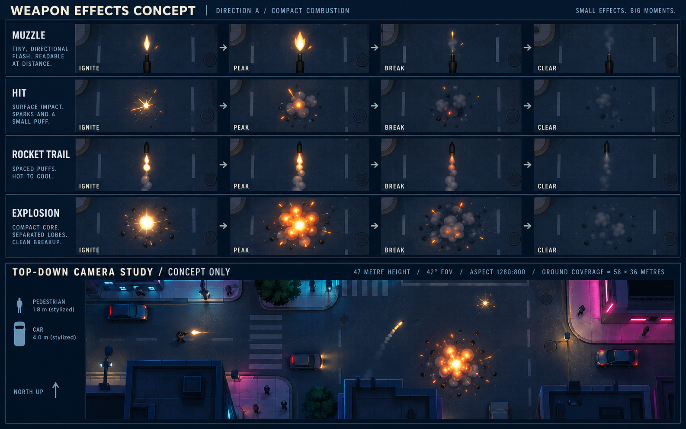
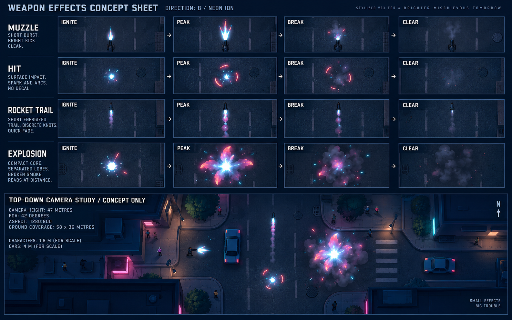
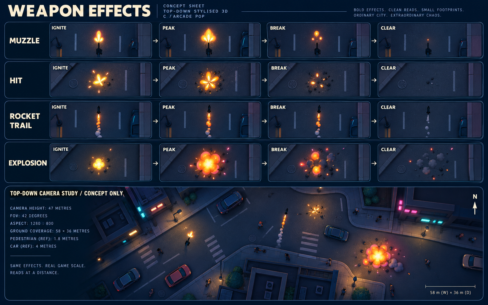
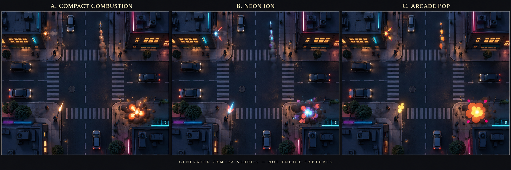

Weapon effects
Three concept directions • Pending Regner’s selection • 9 October 2026
Each sheet explores muzzle flash, surface hit, rocket trail and explosion.
A is recommended for warm action against cool city lighting.
Choose A, B, C or a specific revision before detailed authoring.
Generated overhead camera studies, not engine captures. Exact 47 m / 42° /
north-up / 1280×800 readability awaits a saved Godot preview. Printed image dimensions
and camera claims are illustrative; inset aspect ratios were not preserved.
A — Compact combustion Recommended
Ivory/amber flash, tiny sparks, short warm trail, separated coral/orange lobes.
Closest fit to the established fire language and strongest contrast against neon signs.

B — Neon ion
Cyan-white forks, coral/violet petals and broken impact arcs. Strong sci-fi identity;
could compete with cyan and magenta streets and suggest energized weapons.

C — Arcade pop
Butter-yellow pops, uneven orange droplets and chunky scalloped lobes.
Bouncier irreverent tone; petals need tighter shaping to avoid a flower silhouette.

Overhead context comparison
Matched illustrative streets and placement. These panels also deviate
from the requested 16:10 shape. Evaluate color and silhouette, not measured scale.

Self-review corrections for authoring: shorten trails, clear residual smoke/chips,
keep impacts smaller than explosions and maintain gaps through smoke. Every accepted
explosion retains visible feedback. No gameplay logic or effect-dropping policy is included.
Concept artist and prompt author: weapon effects lead (Codex), commissioned
by Regner. Built-in imagegen; no real brands or external asset-library content.
Rocket model remains the rocket lead’s asset. Sources, materials and scenes follow selection.